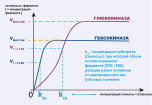

На данном уроке мы рассмотрим
-
первую реакцию, в которой глюкоза принимает участие после
попадания в клекту
- превращение глюкозы в глюкозо-6-фосфат (Г6Ф)
-
ферменты, катализирующие первый этап гликолиза (метаболизма
углеводов)
- гексокиназа
- глюкокиназа
- патологии, ассоциированные с дефицитом этих ферментов
Итак, после попадания глюкозы в цитоплазму клетки
- она подвергается распаду

Процесс расспада глюкозы в клетке носит название
гликолиз.
Первый этап гликолиза
- превращение глюкозы в глюкозо-6-фосфат (Г6Ф)
-
протекает под действием ферментов
- гексокиназы (ГКК)
- глюкокиназы (ГЛК)
рисунок 2
Для начала
- изобразим общую таблицу и схему этих ферментов
- затем
- рассмотрим ферменты по отдельности
| ГЕКСОКИНАЗЫ | ГЛЮКОКИНАЗЫ |
| Во всех тканях кроме печени и пжж | В печени и ПЖЖ |
| предостерегают клетку от перенасыщения глюкозой | способствуют большему захвату глюкозы клеткой |
| ингибируются глюкозо-6-фосфатазой (Г6Ф) | ингибируется фруктозо-6-фосфатазой (Ф6Ф) |
| высокое сродство с глюкозой | низкое сродство с глюкозой |
| способны метаболизировать маленькое количество глюкозы (Vmax) | способны метаболизировать большое количество глюкозы |
| быстро достигают максимальной активности | максимальная активность достигается медленно |
Гексокинзы и глюкокиназы
-
подчиняются уравнению Михаэлиса-Ментен
- могут быть представлены в следующем графике

рисунок 2
Что такое VMAX и km ?
- Vmax
-
допустим организму необходимо метаболизировать (переварить) 1000 молекул глюкозы. Исходя из таблицы выше,
- гексокниаза обладая низким Vmax способона метаболизировать 250 молекул глюкозы за 15 минут (1000 молекул = 60 минут).
- глюкокиназа, обладая более высоким Vmax способна метаболизировать уже 500 молекул за 15 минут (1000 молекул = 30 минут).
-
допустим организму необходимо метаболизировать (переварить) 1000 молекул глюкозы. Исходя из таблицы выше,
- km
- после очередного принятия пищи
- концетрация глюкозы в клетке низкая
- гексокиназа обладая низким km
- в начале примет метаболизм глюкозы на себя
- когда ГКК достигнет Vmax (т.е. когда ГКК исчерпает свои метаболизирующие способности)
- глюкокиназа активируется под действием инсулина
- *инсулин способствует транспорту глюкозы из крови в клетку (т.е. инсулин увеличивает km)
- глюкокиназа активируется под действием инсулина
Гексокиназа
-
находится во всех тканях кроме печени и ПЖЖ
-
напротив, глюкокиназа находится в печени
- обеспечивая синтез и хранение гликогена в ней [печени]
-
напротив, глюкокиназа находится в печени
-
обладает высоким сродством к глюкозе
- из рисунка 2
- Km гкк > Km глк
- т.е. для активации данного фермента достаточно небольшой концентрации глюкозы
-
Vmax достигается быстро
-
но, Vmax гкк меньше Vmax глк
- это обуславливает то, что ГКК метаболизиурет меньшее количество глюкозы за единицу времени
-
важный принцип
- благодаря низкому Vmax, ткани не перенасыщяются глюкозой
-
отсавшаяся часть неметаболизированной глюкозы уходит на долу
ГЛК в печени
- Vmax ГЛК выше Vmax ГКК
- т.е. глюкоза уходит в печень для синтеза гликогена
-
но, Vmax гкк меньше Vmax глк
-
ингибируются глюкозо-6-фосфатом (рис. 1)
-
низкий Vmax + накопление Г6Ф
- индикаторы насыщения ткани глюкозой
-
низкий Vmax + накопление Г6Ф
Глюкокиназа
- находится в клетках печени
-
низкое сродство к глюкозе (Km)
-
необходимо значительное повышение в концентрации глюкозы
- для активации фермента
-
необходимо значительное повышение в концентрации глюкозы
-
Vmax достигается медленно
-
но, при достижении ГЛК метаболизирует больше молекул глюкозы,
чем ГКК
-
это обосновывает распространение данного фермента в печени
- т.к. печень - орган синтеза и хранения гликогена
-
это обосновывает распространение данного фермента в печени
-
но, при достижении ГЛК метаболизирует больше молекул глюкозы,
чем ГКК
- ингибируется Ф6Ф (рис. 1)
Сродство фермента к субстрату определяет способность фермента
связываться с субстратом. В нашем случае:
- субстрат = глюкоза
- фермент = ГЛК или ГКК
Патологии
-
ассоциированные с гексокиназами (ГКК)
- аутосомно-рецессивные заболевания
- хроническая гемолитическая анемия
-
ассоциированные с глюкокиназами (ГЛК)
-
сахарный диабет взрослого типа у детей (MODY-диабет)
- мутации в гене ГЛК (функциональные нарушения)
- приводят к постоянной умеренной гипергликемии
-
ненатальный сахарный диабет
- временная гипергликемия
-
сахарный диабет взрослого типа у детей (MODY-диабет)
- Гипергликемия - ↑[глюкозы] в крови > 5,5 ммоль/л.
- Номрмальная [глюкозы] в крови - 3,5 - 5,5 ммоль/л.